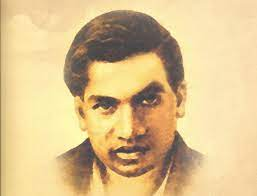
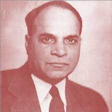
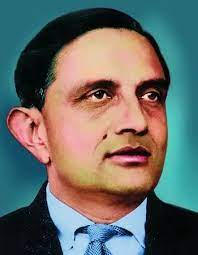
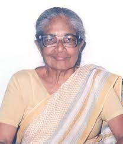
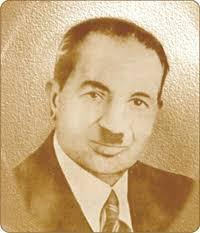

- 
Ramanujan's Collaborators
Srinivasa Ramanujan, the renowned mathematician, collaborated with several lesser-known Indian mathematicians during his lifetime. These collaborators played crucial roles in advancing Ramanujan's work and contributed to various areas of mathematics. - 
Yellapragada Subbarow
Often overshadowed by more well-known figures, Yellapragada Subbarow was a biochemist and pharmacologist who made several critical contributions to the field of medicine. He played a key role in the development of drugs such as methotrexate and the synthesis of folic acid. - 
Vikram Sarabhai's Team
While Vikram Sarabhai is widely recognized as the father of the Indian space program, his team of scientists and engineers worked tirelessly behind the scenes to make India's first satellite launch, Aryabhata, a success. 
Janaki Ammal
A pioneering botanist, Janaki Ammal specialized in cytogenetics and played a crucial role in understanding the chromosomes of several plant species. Her research contributed to the development of improved sugarcane and eggplant varieties.- 
Anna Mani
A meteorologist and physicist, Anna Mani made significant contributions to atmospheric sciences and weather research. She worked at the India Meteorological Department and was instrumental in developing weather instruments and conducting studies on cloud physics. 
Darshan Ranganathan
An exceptional mathematician and computer scientist, Darshan Ranganathan was one of the first women to work in the burgeoning field of computer science in India. She played a key role in the development of computer programming in the country.- 
Shanti Swarup Bhatnagar
Although he received recognition in India through the prestigious Bhatnagar Fellowship and Bhatnagar Prize, Shanti Swarup Bhatnagar's contributions as a pioneering chemist and scientific administrator might not be as well-known globally.